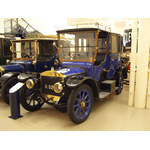
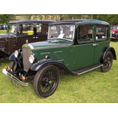
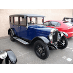
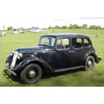
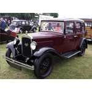
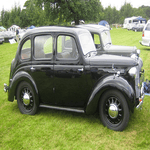
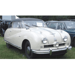
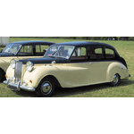

Austin Models
Model: 25/30hp
Production: 1906–1907

Model: 15hp
Production: 1906–1907
Model: 18/24hp
Production: 1907–1910

Model: 60hp
Production: 1908

Model: 40hp
Production: 1907–1910
Model: 10hp
Production: 1908–1910
Model: 50hp
Production: 1910–1914

Model: 7hp
Production: 1913–1914

Model: 20hp
Production: 1913–1919
Model: 30hp
Production: 1914
Model: 3-ton lorry
Production: 1913–1914

Model: 20 (Post-War)
Production: 1919–1929

Model: 12
Production: 1921–1939

Model: 7
Production: 1922–1939

Model: 16
Production: 1927–1929
Model: 13/4-ton Truck
Production: 1922–1930s

Model: 10
Production: 1932–1947

Model: 12/4
Production: 1931–1937
Model: 12/6
Production: 1931–1936
Model: 16/6
Production: 1932–1936

Model: 18/6
Production: 1934–1937

Model: Light Twelve-Four
Production: 1932–1936

Model: Light Twelve-Six
Production: 1934–1936

Model: 14
Production: 1937–1939

Model: 18
Production: 1937–1939

Model: Big Seven
Production: 1937–1939

Model: 8
Production: 1939–1948
Model: 16 (Postwar)
Production: 1945–1949

Model: 12 (Revised)
Production: 1945–1947

Model: A40 Devon
Production: 1947–1952

Model: A40 Dorset
Production: 1947–1950

Model: A70 Hampshire
Production: 1948–1950

Model: A90 Atlantic
Production: 1949–1952
Model: FX3 Taxi
Production: 1948–1958

Model: A30
Production: 1951–1956
Model: A35
Production: 1956–1968

Model: A40 Cambridge
Production: 1954–1957

Model: A50 Cambridge
Production: 1954–1957

Model: A55 Cambridge
Production: 1957–1959
Model: A60 Cambridge
Production: 1961–1969

Model: A90 Westminster
Production: 1954–1956

Model: A95 Westminster
Production: 1956–1959

Model: A105 Westminster
Production: 1956–1959

Model: A99 Westminster
Production: 1959–1961

Model: A110 Westminster
Production: 1961–1968

Model: MINI (Austin Seven)
Production: 1959–1969
Model: Austin-Healey 100
Production: 1953–1956

Model: Austin-Healey 3000
Production: 1959–1967

Model: Austin-Healey Sprite
Production: 1958–1971
Model: 3-Litre
Production: 1967–1971

Model: Maxi
Production: 1969–1981

Model: 1800
Production: 1964–1975
Model: 2200
Production: 1972–1975
Model: Allegro
Production: 1973–1982

Model: Marina
Production: 1971–1980

Model: Princess
Production: 1975–1981
Model: Ambassador
Production: 1982–1984

Model: Metro
Production: 1980–1987

Model: Maestro
Production: 1983–1987

Model: Montego
Production: 1984–1988